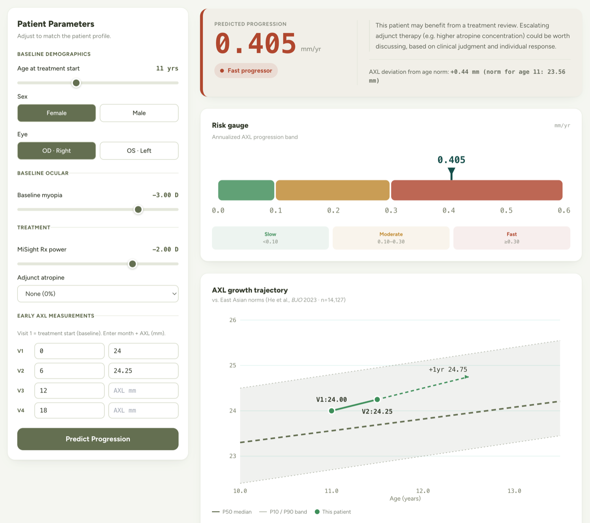

Project Info
Date2025
Stack
Visit the website
Go back
LanguagePython
ML & modelingscikit-learn · XGBoost · SHAP
Data & apppandas · Streamlit

Features
- Enter a child's early measurements and get an estimate of their long-term short-sightedness progression.
- See why — plain, visual explanations of what's driving the prediction.
- Live and in-browser — nothing to install.
Why I built it
As an optometrist, I wanted to give clinicians an earlier signal for children at high risk of fast-progressing myopia, instead of waiting years to find out. Building it showed me how much further technology could scale clinical care — which is what led me into software engineering.
Core technical
- Estimated long-term progression from just the first 6 months of data (RMSE 0.090 mm/yr), best of a 6-model benchmark with leakage-safe scikit-learn pipelines.
- Turned optometry domain knowledge into predictive features a purely technical modeler would miss.
- Earned clinician trust by using SHAP to confirm the model's logic matched clinical theory.
- Shipped it as a live Streamlit tool with patient data de-identified by design.